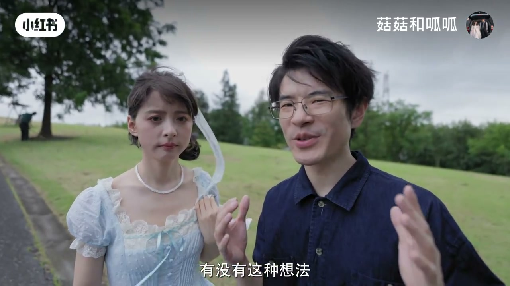
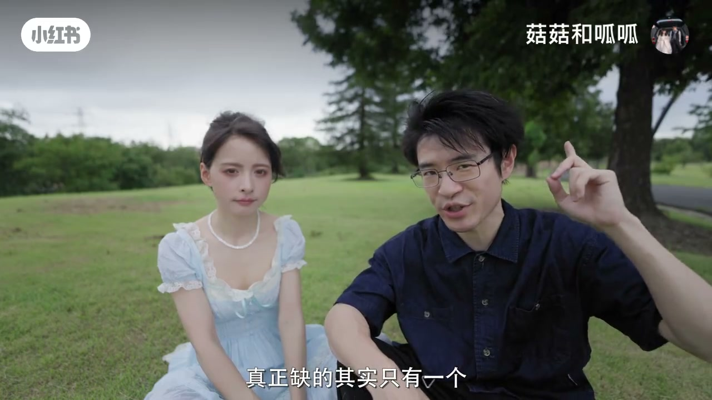
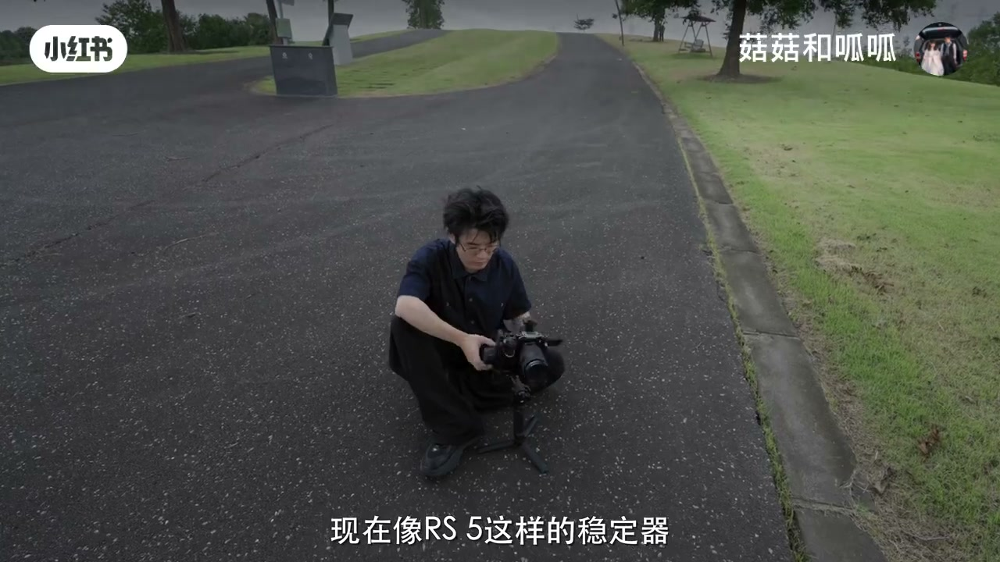
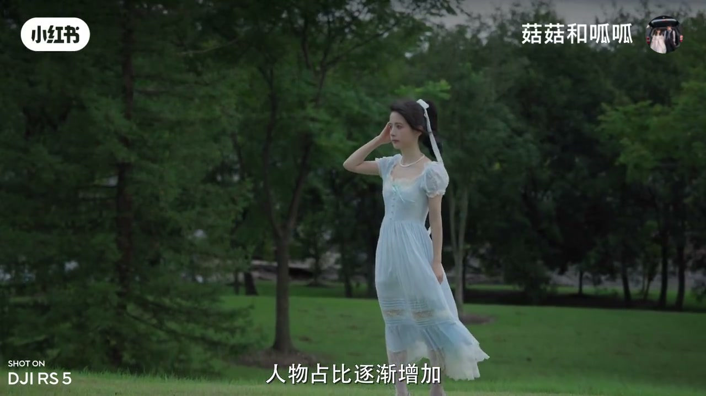
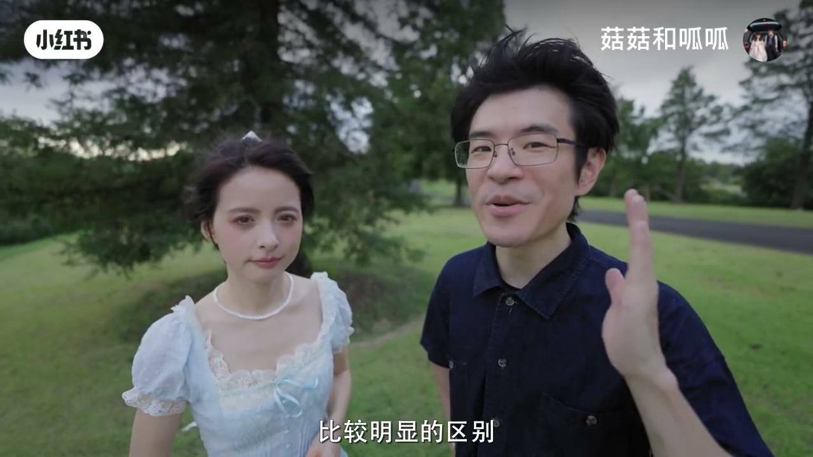
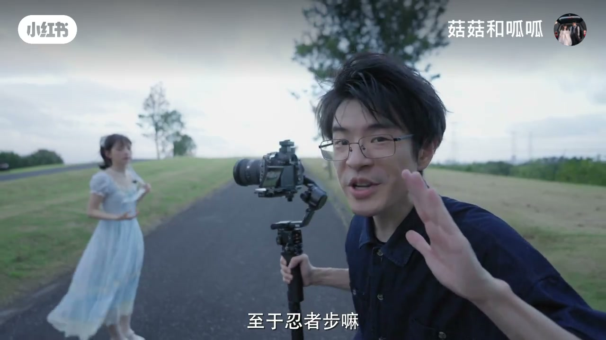
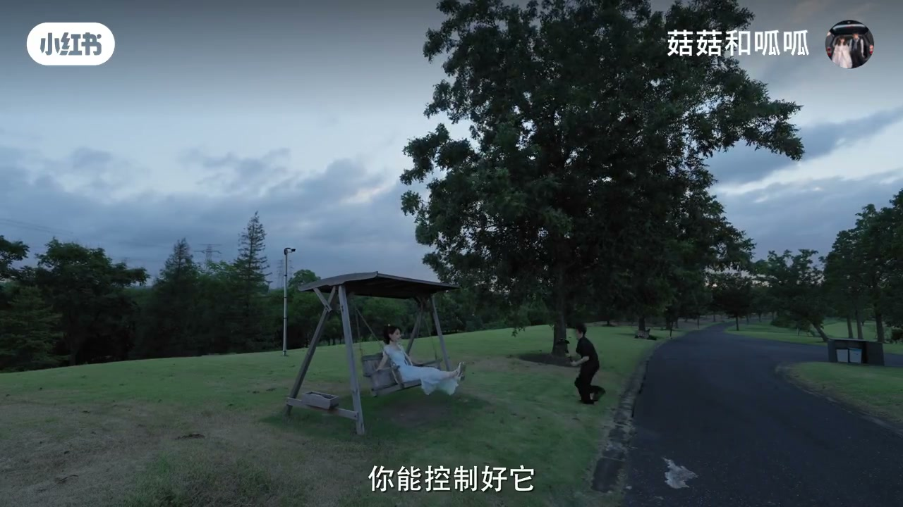
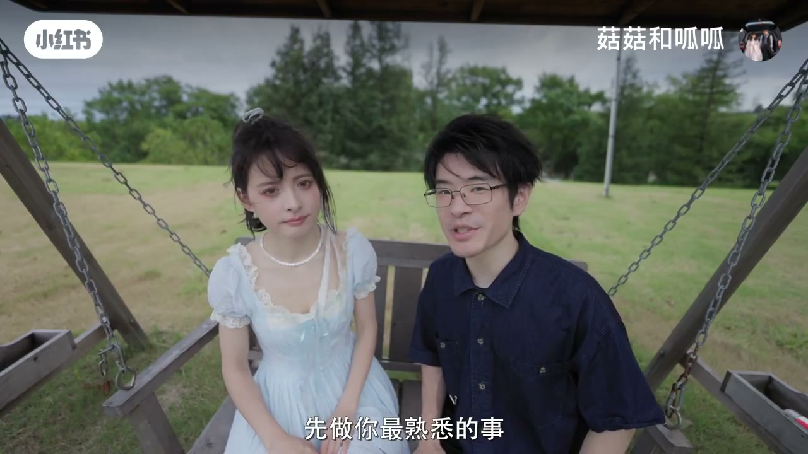

内容要点
「菇菇和呱呱」给摄影转视频的人一套可练方法：摄影师天然会找第一张好看照片，却常没设计落幅。运镜被定义成「从一张好看的照片，有理由地、丝滑地走到另一张」。以大疆 RS 系列为例演示推拉情绪差、人物锁定与忍者步；结尾强调先找两张照片再问为何走过去。
知识结构
单看几秒视频好看，但人物没动作时镜头必须参与运动。
先定起伏A与落幅B；中间才是运镜问题。
推=主观聚焦；拉=抽离旁观落幕感。
锁定人物、忍者步；别背名词，先问为何走。
运镜不是动作词典，是两张照片之间的有理由过渡；先补落幅，再谈推拉摇移名词。
00:00-01:10从拍照思维出发：缺的是第二张
开场户外绕圈热身，提出从拍照思维一步步把照片拍成视频。结论：很多摄影师第一次拍视频真正缺的只有一个——第二张照片。
旧习惯：拍到好看就切手持视频录几秒，单看没问题；但普通人不是演员，人物动作有限，相机就得参与运动。


01:10-02:20起伏 A 与落幅 B
上稳定器：像 RS5 这类有全轴臂微调旋钮，调平效率高。摄影师优势是会找第一张；问题是「日式准备上哪儿去啊？不知道，先走着」——知道出发不知道停。
练习：先不录视频，找好看起伏 A，再找希望镜头最后停住的画面 B。新增问题只剩中间：怎么从 A 走到 B。运镜≈从一张照片走到另一张；更严谨：有理由、丝滑地走到另一张好看照片。

02:20-03:40同一条路，正反走情绪不同
推镜头：人物占比渐增，注意力集中到人，主观性、情绪感增强。反过来：从看他变成看他在哪，抽离、旁观、落幕感，经典结尾用法。
真正值得想的不是「这里要推还是拉」名词，而是信息与情绪要什么。


03:40-05:44锁定、忍者步，与收束练习
稳定器屏幕可直接锁定人物跟踪；身体用忍者步减震。示范一小段后收束：如果你会拍照，想学运镜，不用急着背一大堆名词——先找到一张好照片，再找到第二张，然后问自己为何要从这里走到那里，剩下的交给运镜。
片尾「补一个刷锅」提示还有短附录，主文以两张照片框架为主。



完整转录（103段）
以下文本由 Whisper medium 模型自动转录，可能存在少量识别误差，已尽可能修正。
已经绕了八圈了
保持住啊
今天干脆就从拍照四位出发
看怎么一步步把照片
拍成视频
先说结论
很多摄影师第一次拍视频
真正缺的其实只有一个
第二张照片
我们刚拍视频时
有一个特别摄影师的办法
拍到好看的照片时
顺手切视频模式
录个几秒钟
这样的镜头单看没问题
甚至很好看
但拍多了以后嘛
我又不是专业演员
你还想让我给你演一段啊
普通人面对镜头能自然站著
就已经算调用了全部演技了
所以很多时候人物没那么多动作
相机就得参与运动
那我们先上一下稳定器啊
现在像IS5这样的稳定器
有了全轴臂微调旋钮
调频效率还是很高的
摄影师有一个天然优势
特别会找第一张照片
所以我们的起伏
还是挺那么像为是的
但是
您日式准备上哪儿去啊
不知道
先走著
问题就在这
我们知道从哪出发
却根本没设计
该停在哪里
所以我后来发现
摄影师学运镜
真正需要补的东西很简单
第二张照片
落伏
比如我们今天这个场景
先不录视频
按摄影师们最熟悉的方法来
先找一个好看的起伏A
再找一张
你希望镜头最后停下来的画面
到这一步
摄影师们都很熟练
新增的问题只有中间这段
也就是怎么从起伏A
走到落伏B
所以运镜就是从一张照片
走到另一张照片
差不多
更严谨的说
是从一张好看的照片
有理由的
丝滑的
走到另一张好看的照片
专业摄影师
主要就会在自多
但用这两张照片
我们先别急著走
再想一个问题
比如这样一个推镜头
人物占比逐渐增加
观众注意力自然会集中到人身上
这样的运镜能传递出一种主观性
聚焦人物表情和心理
强化情绪感
方向反过来
意思就从看他
变成了看看他在哪
会带来一些抽离感
旁观感
还有一点落幕感
也是一种经典的结尾用法
同样的路反著走
信息和情绪
都会不一样
所以真正值得想的
不是在这个地方
我们要推拉摇移
那讲到这
我们就用刚说的方法拍一小段
所以如果你本来就会拍照
想开始学运镜
不用急著背一大堆人
先做你最熟悉的事
找到一张好照片
再找到第二张
然后问问自己
为何要从这里走到那里
剩下的交给运镜
那今天拍完了
嗯
补一个刷锅
别走啊
很快的